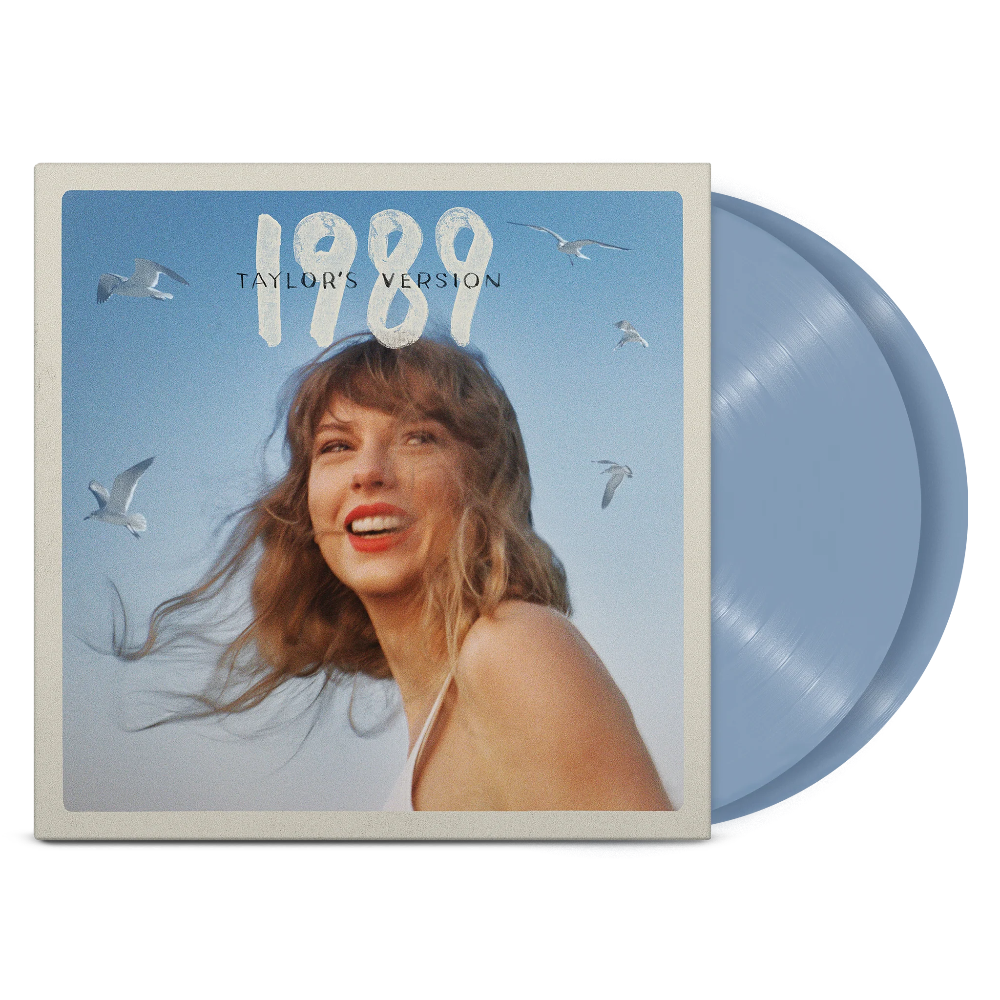
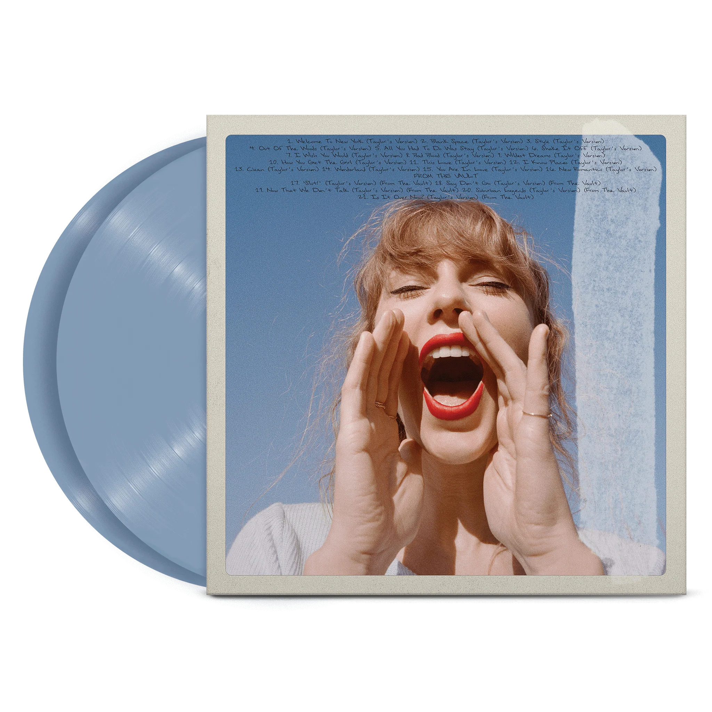

1989 (Taylor's Version)
Crystal Skies Blue Vinyl (Edición Coleccionable)


Detalles:
- 21 canciones
- Incluye 5 temas inéditos de The Vault, nunca antes publicados.
- 2 vinilos Crystal Skies Blue, de colección.
- Carpeta coleccionable con arte exclusivo en portada y contratapa.
- Fundas de álbum coleccionables con letras completas y fotos inéditas jamás vistas.
Tracklist:
- Welcome to New York (Taylor’s Version)
- Blank Space (Taylor’s Version)
- Style (Taylor’s Version)
- Out of the Woods (Taylor’s Version)
- All You Had to Do Was Stay (Taylor’s Version)
- Shake It Off (Taylor’s Version)
- I Wish You Would (Taylor’s Version)
- Bad Blood (Taylor’s Version)
- Wildest Dreams (Taylor’s Version)
- How You Get the Girl (Taylor’s Version)
- This Love (Taylor’s Version)
- I Know Places (Taylor’s Version)
- Clean (Taylor’s Version)
- Slut! (Taylor’s Version) (From the Vault)
- Say Don’t Go (Taylor’s Version) (From the Vault)
- Now That We Don’t Talk (Taylor’s Version) (From the Vault)
- Suburban Legends (Taylor’s Version) (From the Vault)
- Is It Over Now? (Taylor’s Version) (From the Vault)
Un artículo de colección imprescindible para los verdaderos swifties 🩵🎶💿